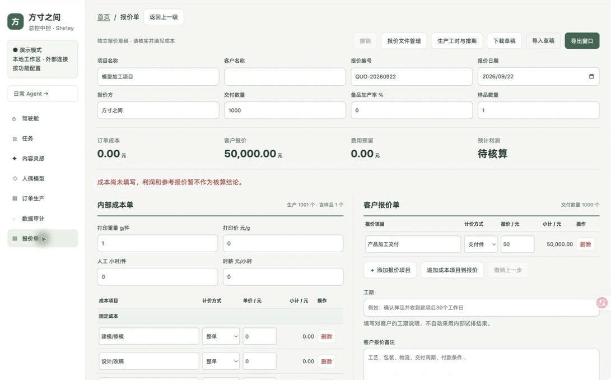
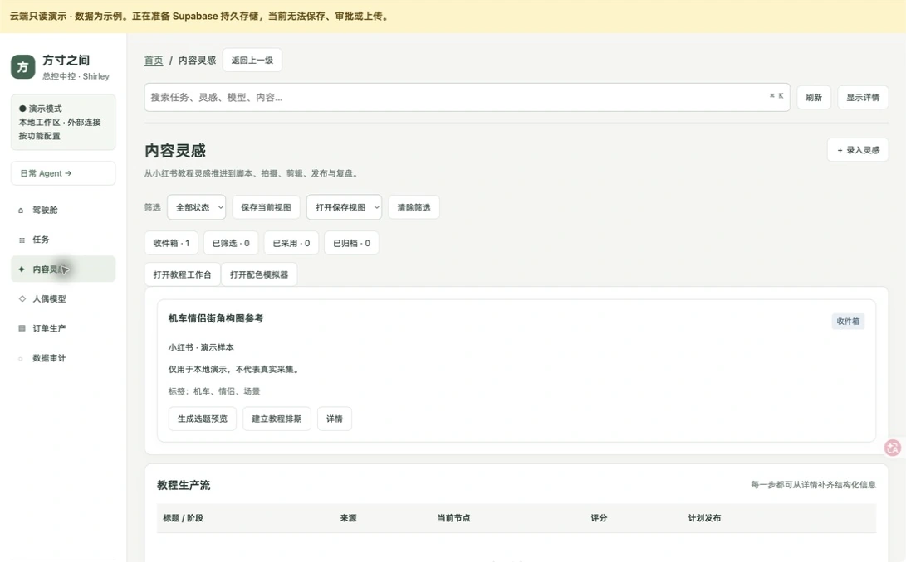
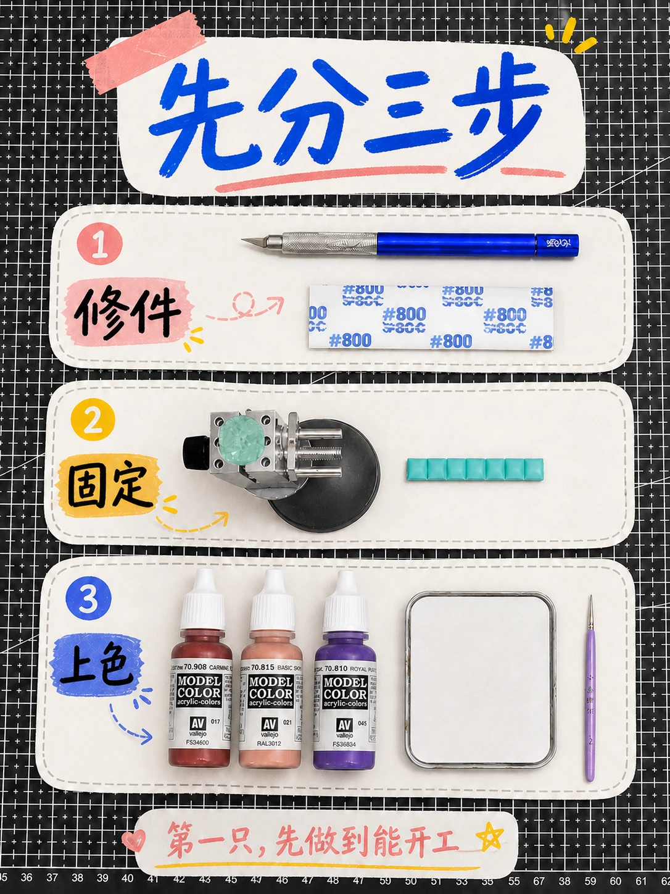
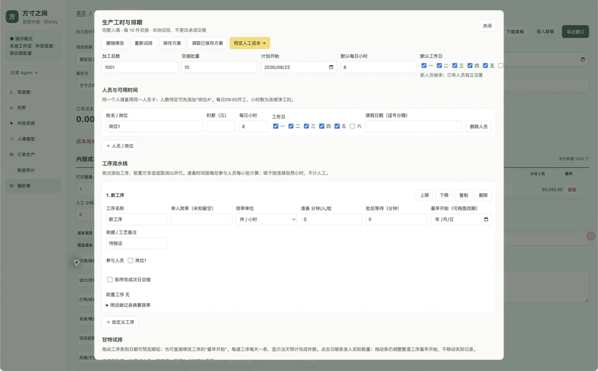

差价与成本利润
按整单、生产件、交付件拆分费用，结合客户报价、费率预留和目标利润参考价进行核算；参考价不会自动改写客户报价。
INCHES AGENT · 方寸之间总控
把报价、内容运营和研发排期连接起来。
让成本看得清，让内容有排期，让协作有依据。
先解决“这一单怎么报价”，再把素材、选题、人员与工序接进来。INCHES AGENT 不是一次完成的系统，而是围绕工作室日常持续迭代的工作台。
迭代时间按项目回顾整理；下方截图为 2026 年 9 月核验的当前界面，不作为各历史月份的界面快照。云端是只读演示，本地版含报价与排期模块，二者版本不同。
从报价系统迭代到报价 Agent：把内部成本、客户价格与利润判断放在同一工作区；历史报价留作独立快照，客户导出与内部核算分开，避免把成本明细误发给客户。

按整单、生产件、交付件拆分费用，结合客户报价、费率预留和目标利润参考价进行核算；参考价不会自动改写客户报价。
保存独立历史报价，支持检索、只读预览、下载备份与复制新报价。旧单保留，新方案继续迭代。
客户报价单单独维护交付数量、工期与备注，通过导出窗口生成客户报价图或文档；内部成本仅用于自己的决策。
报价草稿和历史文件保存在本机浏览器，需要定期备份。展示的是可运行功能，不以演示金额推导经营收益，也不宣称 Agent 自动完成定价或对外发送。
结合 AI 运营 Agent，把跨平台数据与视频线索整理为素材库，再转成选题、脚本大纲和拍摄排期。总控负责推进工作，内容发布仍由人确认。
保留平台、作者、来源链接和互动信息，形成可回溯的参考资料。
结合教学难度、产品关联和制作成本筛选机会，交由 Shirley 确认。
拆成脚本、拍摄、剪辑、发布准备与复盘任务，连接内容工作台。


本地历史档案已保留采集与内容产出记录；当前云端演示未实时接入平台采集。教程图片作为实际设计产出展示，不代表页面中的示例选题已自动发布。
把人员可用时间、工序效率、前置依赖和小批交接放进同一排期模型。通过甘特试排理解资源分配，再把人工费用带回报价草稿。

独立设置人员时薪、每日工时、工作日与请假，复用同一人员卡避免重复分配。
支持工序依赖、小批交接、按日预计完成量与拖动改期预览；实际完成数量单独记录。
将概念、多视图、版本与资产关联到研发对象，标清当前阶段、负责人和待审核事项。
上述能力已对照本地代码与资源库文档核实。排期采用批次优先试排，不保证最短交期；缺少效率、时薪或人员时不生成确定结果。对外承诺、人工成本应用和高风险动作仍需人工确认。
形成报价核算、内容统筹、资源排期三条可复用工作流。Agent 整理信息、生成草稿与试排方案，Shirley 负责审核、价格、交期和发布等关键决策。